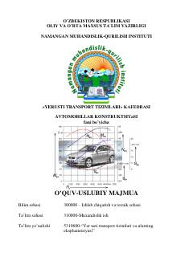

AKAvtomobillar tuzilishi va konstruksiyasini o'rganish uchun mo'ljallangan o'quv-uslubiy majmua.
Ushbu o'quv-uslubiy majmua avtomobillar konstruksiyasi fani bo'yicha nazariy va amaliy mashg'ulotlarni o'z ichiga oladi. Unda transport vositalarining umumiy tuzilishi, dvigatellar, mexanizmlar, tizimlar hamda ularning ekspluatatsion xususiyatlari batafsil yoritilgan. Qo'llanma talabalar va soha mutaxassislari uchun mo'ljallangan.